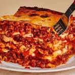

Lasagna Recipe

Ingredients
Use these ingredients to make a delicious Lasagna:
- 1LBS ground beef
- 1 Onion Chopped
- 2 cloves of garlic
- 1 can of tomato sauce
- 1 can of tomato paste
- 1 can of diced tomatoes
- 1/2 cup of water
- 2 teaspoons of sugar
- 1 teaspoon of dried basil leaves
- 1/2 teaspoon of salt
- 1/4 teaspoon of ground black pepper
- 1/4 teaspoon of crushed red pepper flakes
- 1/4 cup of chopped fresh parsley
- 12 lasagna noodles
Steps
-
In a large skillet, cook and stir ground beef, onion, and garlic until well browned.
Drain excess fat.
-
Stir in tomato sauce, tomato paste, diced tomatoes, and water.
-
Season with sugar, basil, salt, pepper, and red pepper flakes.
Simmer, uncovered, for about 30 minutes, stirring occasionally.